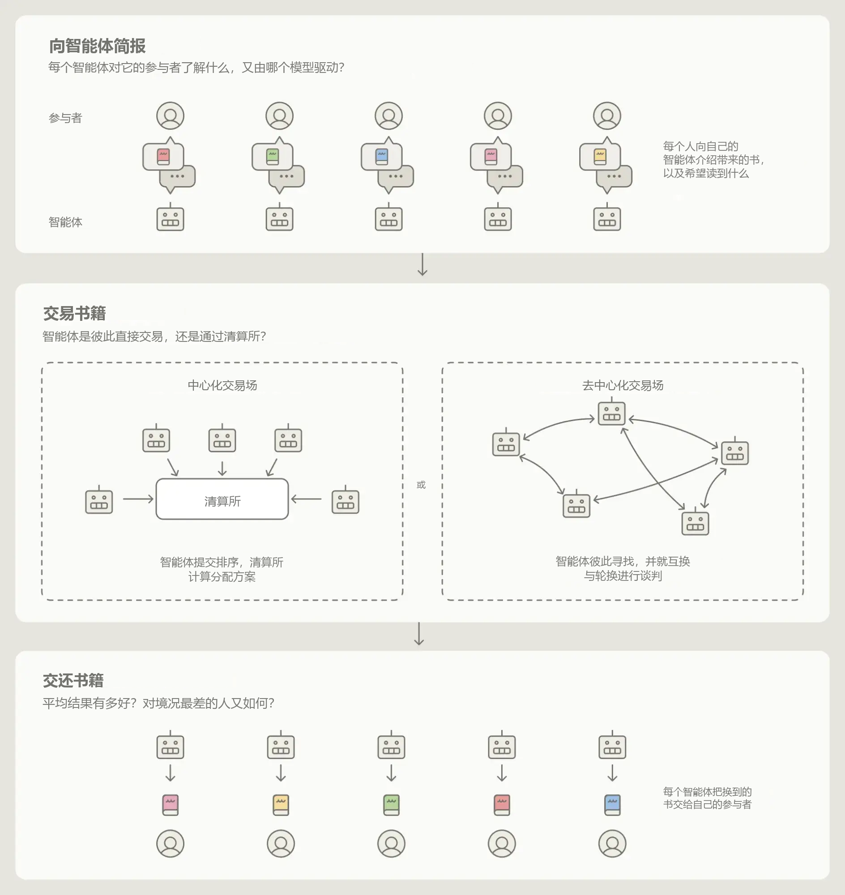
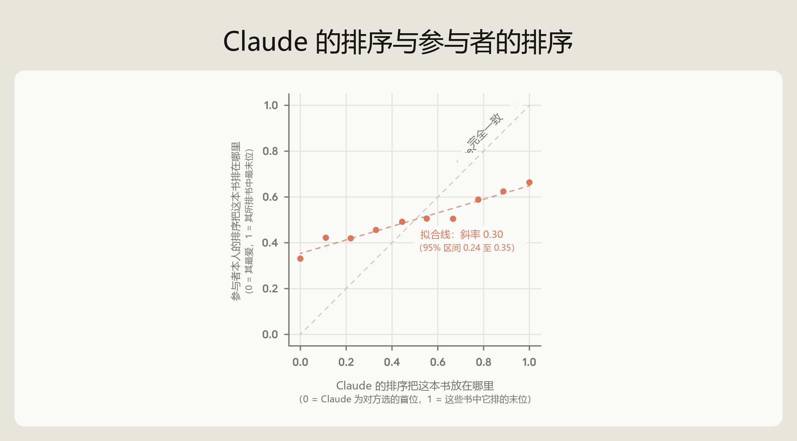
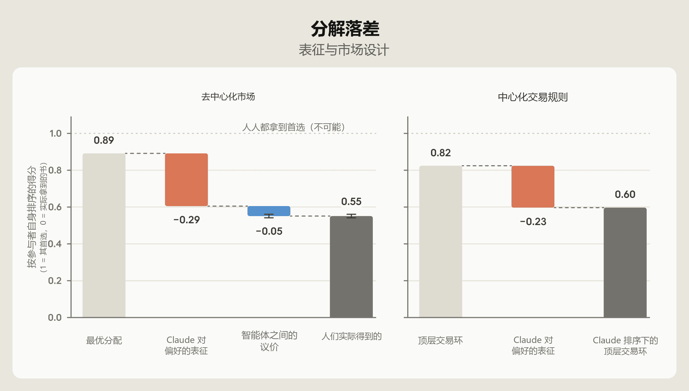
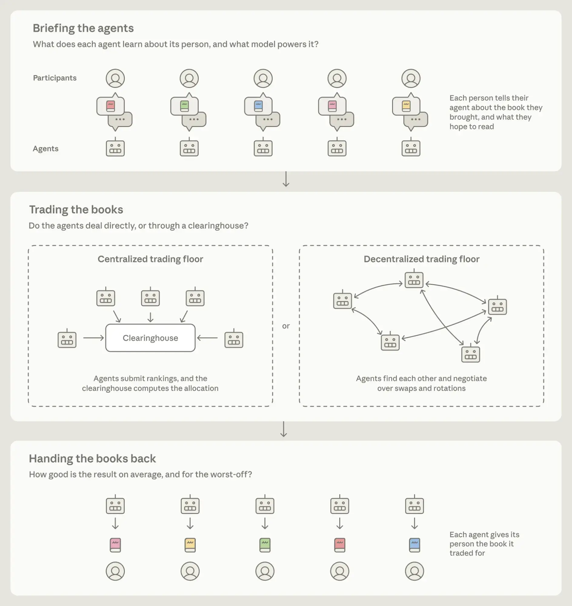
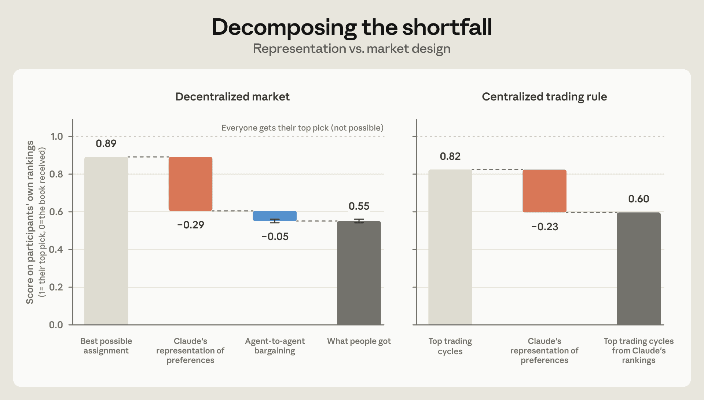

Project Swap：当智能体替我们做交易时会发生什么？
📖 中文摘要
专业术语注解
基准真值排序：参与者亲自给自己池中10本书排的序，用于检验智能体对其偏好的表征功利主义最优：假定清算所可诚实获知所有人偏好时达成的总分最高分配方案顶层交易环：设计成说真话符合每人最大利益、不依赖诚实的中心化交易规则受托责任：智能体须忠实理解并服务其委托人的义务，可先测试它是否已理解某个特定的人偏好表征：智能体从简短访谈构建的书籍排序，本研究中其误差是市场效率落差的主因📄 中文全文
- 类别： 经济研究（Economic Research）
- 来源： https://www.anthropic.com/research/project-swap
经济研究（Economic Research） 2026 年 9 月 24 日 阅读 PDF 发布于 2026 年 9 月 24 日 团队 经济学 主题
相关文章 * 前沿红队 2026 年 11 月 6 日 Project EVE：Claude 玩 MMORPG
摘要
- 为了看看把智能体送进市场后哪些做法有效、哪些会出问题，我们造了一个由 Claude 组成的微型市场——这是Project Deal更可控的续篇，后者是我们首次让智能体代表人们在市场中互动的实验。Anthropic 分布在六个办公室的员工各带来一本想送出去的书。每位参与者都与 Claude 简短聊了聊自己喜欢读什么，然后派出一个由 Claude 驱动的智能体进入开放式交易场，向其他人的智能体推介、讨价还价并达成交易。目标是让每个人都能带回家一本自己会喜欢的夏日读物。
- 参与者还根据自己的兴趣给 10 本书排序，以便我们评估其智能体对他们的代表程度。仅凭五分钟的聊天，智能体对书籍的排序与本人排序在 61% 的书对上一致——对如此简短的对话来说，这个结果好得出人意料。
- 一旦进入交易场，智能体们交易得不错。市场之所以未达理想效果，主要在于智能体缺少关于其参与者的信息，而不在于它们的交易方式。
- 随后我们把每个交易场重跑了数十次，改变所用模型和智能体的指令。我们发现，智能体运行在哪个模型上，对其谈判结果的影响比我们给出的指令更大。采用更强模型的市场效率更高。
- 大多数读了拿到那本书的人表示喜欢，平均而言，参与者说愿意把自己一年购书预算的大约三分之一交给 Claude 支配。
我们为什么做这项研究
生活里到处都是本可让各方都过得更好、却始终没能达成的交易。原因往往很简单：找到合适的交易对手、一路谈到成交，太耗精力。想想这样一位患者：拿到一份负担不起的报价后就放弃了治疗，而其实另有一家诊所收费低得多，或者给他报价的那家医院若被开口询问本会减免账单。再想想你的工作。某个地方或许有一份更适合你的职位，雇主也乐意雇你。但你们可能找不到彼此，因为谁都没有时间不停地搜寻。日常里还有一些更小的交易同样被忽略——职场里换班、拼车协调、互换接送孩子。 如果未来有一个智能体全天候为你工作，与潜在交易对手交谈、商议可能的条件，这些交易能否成真？ 也许能——但这个未来取决于许多我们尚无答案的问题。若智能体要代你行事，你如何知道它已理解你？再者，当许多智能体聚在一起彼此交谈，总得有某个市场或平台来制定互动规则。谁可以进入？交易落空时又该如何？ 随着智能体被越来越多地投入真实市场，这些问题愈发紧迫。于是今年夏天，我们搭建了一个小规模、可控的市场来研究它们：一个由 201 名 Anthropic 员工及其 Claude 驱动智能体组成的以物易物经济体。每人带来一本想送出的书。随后，他们与自己的 Claude 驱动智能体聊了聊今夏希望读到哪类书。智能体们在一个数字「交易场」上碰面、互换书籍，直到时间耗尽。每个人都带回家一本智能体替他们换来的书（或者说，大多数人是这样……后文再表）。 这项实验让我们提前窥见前方的难题。任何设计_面向市场的智能体_的人，都需要一种办法来检查智能体是否理解其参与者。任何设计_面向智能体的市场_的人，都需要明确规则：允许哪些智能体进入、交易落空时如何处理，以及参与者能看到多少市场活动。
如何构造一个市场
运作市场有两种基本方式。在中心化市场里，每个人把想要什么告诉单一机构，由该机构算出交易方案。在去中心化市场里，人们彼此寻找并直接谈判。AI 智能体对两类市场都能提供帮助。 先看中心化市场。若单一机构确切知道每个人想要什么，算出最优交易不过是计算问题，经济学家早已明白这一点。实践中的一个难处是，把自己到底想要什么一五一十讲清楚往往太繁琐，不值得费那个劲。例如，一家咖啡馆经理本可以为 20 名员工排出理想班表，前提是每人把每个班次相对于其他每个班次的价值都精确列表——是否愿意用两个周六上午换一个周五收班，只要第二天早上不开店，晚收班是否可以接受，等等。如果 AI 智能体能从一段轻松的对话里学会一个人的偏好，那些因成本过高而无法集中运作的市场就可能变得可行。1 但中心化市场还需要有人来运营——用经济学的说法，一个「清算所」。参与者必须信任这个机构，把信息交给它，并相信它会执行选定的结果。常常并不存在这样的机构，或者人们不愿把一切和盘托出。求职者可能不希望某个中央撮合方知道自己正在找工作——也不想让它知道在找什么样的工作。他们更愿意谨慎地接触少数几家雇主，每家只告知其需要知道的部分。这类情形下，市场就必须是去中心化的。 在这里，AI 智能体可以通过降低寻找交易对手与谈判的心力，催生新的去中心化市场。我们早已知道这类帮助有价值，因为人们愿意为它付钱。市面上就有人类代理专门做这件事：房产中介、猎头，甚至媒人。但由于搜寻与谈判要占用一个人本就稀缺的大量注意力工时，他们价格昂贵，只有负担得起的人才雇得起。相比之下，AI 智能体的注意力远没有那么稀缺。如果它还善于议价，就能让更多人拥有卖房者和高管才有的东西——一个不知疲倦地替自己奔走的代理。

实验设计示意图。参与者告诉智能体自己想读什么。智能体把这些偏好带到去中心化交易场，与其他智能体换书。参与者带回家智能体替自己换到的书。我们模拟中心化市场的结果以作对照。实验是如何进行的
201 名参与者分布在旧金山、纽约、伦敦、西雅图、华盛顿特区和都柏林六个办公室的本地池中。各池规模从三人（都柏林）到 115 人（旧金山）不等。谨向詹姆斯·乔伊斯致歉，我们在多数分析中排除了都柏林人。2 这是我们第二次研究 Claude 驱动的市场。在Project Deal中，智能体在一周时间的分类广告市场里为 Anthropic 员工买卖真实物品。但由于商品各异（比如乒乓球和滑雪板）、议价又自由随意，没有简单办法衡量结果_本可以_有多好。因此这次我们搭建了一个更便于研究和打分的市场。在这个市场里，参与者的偏好被简洁地表示为其所在池中所有书籍的一个排序。于是我们能轻松计算市场在满足这些偏好方面表现如何。 但这些干净的测量全都依赖于知道人们如何给池中所有书籍排序。现实中没人会手工给 115 本书排序。因此，为了解人们的偏好，Claude 与每位参与者进行了一段简短的半结构化入门访谈，问几个关于其总体口味以及今夏想读哪类书的开放式问题。根据这段对话，Claude 为参与者所在池中的每本书构建出一个排序，估计其偏好。这一步我们使用了一个强模型 Fable 5.3 另外，我们收集了基准真值（ground truth）：每位参与者给自己池中的 10 本书排序。4智能体从未见过这些基准真值排序。 智能体带着其参与者由 Claude 构建的全书排序被送上交易场。每个智能体起初都持有其参与者的那本书，目标是把它换成别的。5每个交易场都有最长时钟时间，且为防止拥塞，同一时刻只有有限数量的智能体可以发言。6获准发言时，智能体可以在共享频道里发一条消息：提出交换、接受或拒绝某个交换，或只是向全场闲聊。交易提案可以是双边互换，也可以是多方轮换，只有每一方都接受才会执行。交易场的全部历史（谁说了什么、哪些交换被执行）都是公开的。时间耗尽或智能体们安静下来，交易场即关闭。 每个交易场上有一半智能体被随机指定为「冷酷无情」，并被告知其唯一目标是为本人拿到一本暑假里愿意读的书。另一半被指示为「亲社会」——它们与冷酷无情组有相同的主要目标，但还多一个次要目标：确保实验里每个人最终都拿到一本自己愿意读的书。7确切提示词见附录。 最后，在书籍分发三周后，参与者填写了终期问卷，询问他们对所收到书籍的满意程度，以及日后有多大意愿再次把类似决策托付给智能体。图 1 展示整体实验设计。图 2 展示伦敦现场交易场的一段节选，呈现交易最初 5 分钟的消息。 某次运行的节选。伦敦现场交易场交易最初五分钟的消息。为保护匿名，参与者姓名已做更改。 一次现场活动只能给出事情可能如何发展的单次运行。为了分辨哪些结果只是偶然产物、哪些是实验设置的稳定特征，我们又把市场重跑了许多次，每次只改变一个变量。 重跑分三类。第一，我们原样重复现场设置（每个智能体都跑 Opus 4.8，一半被告知「冷酷无情」、一半「亲社会」），只改变哪些智能体抽到哪种指令。随后我们让每个智能体都跑 Fable 5，做了同样的重跑。第二，为分离模型的影响，我们给每个智能体中性指令，跑了 80 个交易场，其中所有智能体分别运行于 Haiku 4.5、Sonnet 4.5、Opus 4.8 或 Fable 5.8 上。第三，我们跑了 60 个混合交易场，一半智能体跑 Opus，另一半跑其余三个模型之一。附录列出了我们跑过的所有变体。 本文主体聚焦这个去中心化市场，但全程都以两种中心化方案作为基准对照：一是可能的最优分配（经济学家称之为「功利主义最优（utilitarian optimum）」），它假定清算所可以直接询问人们想要什么并得到诚实回答；二是在这类市场中被广泛研究的规则——顶层交易环（Top Trading Cycles），它不依赖诚实（其设计使得说真话符合每个人的最大利益）。9
Claude 猜测偏好的准确程度
智能体替你做的每件事，都取决于它对你想要什么的理解。通常，很难检验这种理解有多准。在这里则容易些——每位参与者亲自给自己池中的 10 本书排了序，我们可以把他们的排序与 Claude 的排序对照。 基于简短入门聊天得到的 Claude 排序，与参与者本人的排序相关性相当不错。在一个人排过序的所有书对中，Claude 的次序与他们一致的占 61%（随机猜测则为 50%）。图 3 展示 Claude 排序与参与者排序的对照。

Claude 排序与参与者排序的对照。横轴为 Claude 排序中的归一化名次，纵轴为参与者本人的排序。汇总自提交了排序的 188 名参与者。 为给这 61% 一个参照，我们把 Claude 的猜测与其他几种猜测偏好的方法作了比较。仅按受欢迎程度给书排序——用Open Library的「想读」计数——与参与者在约 53% 的书对上一致。另一种可作对照的简单方法是协同过滤（collaborative filtering）：用形如「喜欢 X 的人也喜欢 Y」的公开数据集构建排序。我们取一个人在入门访谈里列出的书，查找哪些别的书往往被同一批读者打分，再按每本书与其所列最爱共同出现的强度，给这个人的书池排序。这一方法达到约 55% 的成对一致率。 尽管关于大语言模型引出并表征人类偏好的文献众多，10但能与我们这 61% 成对一致率直接对比的数字很少。一个有用的参照来自一项研究：让一个算法和一个人自己的朋友分别预测两个笑话中此人会觉得哪个更好笑。情境相差颇大，但他们的算法同样在约 61% 的情况下与本人判断一致。朋友的预测命中率更低，约 57%。 在入门问卷上更用心的参与者，被表征得更好。这大体在意料之中。有点出人意料的是，即便入门访谈相当短，差异也已可察觉——中位数参与者在八条聊天消息里只打了 216 个词。写约 300 个词而非 150 个词，预测一致率会高出约 4 个百分点——相当于随机猜测与 Claude 对普通参与者表现之间差距的三分之一。11驱动市场的信息限制了结果
在把智能体送进市场代你交易之前，你会想知道它最可能在哪一环辜负你。更可能是没理解你，还是没替你谈好？在这里，我们发现同事们的 Claude 谈判表现不错；短板在于理解本人到底想要什么。 为衡量这一点，我们看每位参与者最终拿到的书落在其本人「基准真值」排序（而非 Claude 构建并用于交易的排序）的什么位置。若某参与者得 1 分，表示拿到了自己列在首位的书；得 0 分则表示拿到列在末位的书；十本里排在第九的书对应 0.11，依此类推。所有参与者的平均值就是市场的「效率」得分。12 若人人都拿到自己排序第一的书，市场效率就是 1。但这在实践中极少可行，因为可能多人盯上同一本——例如在参与者本人的排序里，Project Hail Mary 被旧金山九个人列为首选。把这一点考虑在内，我们实验中最优分配（功利主义最优）的总体得分是 0.89，相当于让参与者大致拿到十本书单里的第二选择。 平均而言，我们市场里的人最终在自己排序上落在 0.55，大致是十本书单里的第 5 选择。相对最优值 0.89 的落差从何而来？为区分两种成因，我们看那个_依据_ Claude 排序计算、却_按_人们本人「基准真值」排序打分的最优分配——它达到 0.60。因此，从 Claude 不精确的排序出发解释了落差的大头（85%），把智能体送进「自由混战」交易场则解释了其余 15%。13一旦市场运行在有噪声的排序上，市场设计对结果几乎不再有影响——顶层交易环依据 Claude 排序计算、按本人排序打分，得到 0.60，而去中心化市场是 0.55（对照图 4 左右两侧的灰色柱）。

落差分解——偏好的表征与市场设计。每根柱子是一个人拿到的书的得分，按其本人「基准真值」排序评估，对提交了排序的 188 人取平均。14左图：依据「基准真值」排序计算的最优分配（棕褐色柱）；依据 Claude 排序计算的最优分配（橙色台阶底部）；依据 Claude 排序、在 80 次中性指令运行中去中心化议价的结果（蓝色台阶底部、灰色柱顶部）。右图：依据「基准真值」排序计算的顶层交易环（棕褐色柱）；依据 Claude 排序计算的顶层交易环（橙色台阶底部、灰色柱顶部）。误差线（95% 置信区间）在适用处展示 80 次运行间的波动。按 Claude 自己的排序看，模型选择会带来差别
按人们本人的排序评判，不同智能体与市场设计选择之间的结果差异很小。15但看看智能体设计选择按 Claude 排序如何影响结果仍有价值，因为这有助于剥离出市场动态的作用。
我们先看模型选择是否影响市场效率，此处效率改按 Claude 的排序计算。本节考察智能体指令为中性（即既不亲社会也不冷酷无情）、且我们只改变驱动智能体的模型的那些重跑。我们发现更强的模型带来更高效的结果，尽管并非单调。16按 Claude 的排序，Haiku 交易场上的智能体平均 0.75，Opus 交易场上平均 0.88（按 Claude 排序的功利主义最优为 0.95）。Sonnet 介于 Haiku 与 Opus 之间。Fable 接近但略低于 Opus。17见图 5。
 按 Claude 的排序评判，由更强模型组成的交易场效率更高。左为所有中性指令的同模型交易场、右为所有中性指令的混合模型交易场的效率。每个标记代表以该模型或该组合运行的 20 个交易场（5 个城市池 × 4 次运行）上所有智能体的平均。误差线为 95% 置信区间，标准误按交易场聚类。18
在模型混搭的交易场上，较强的模型平均表现往往优于较弱的对手，这一发现呼应了Project Deal及其他研究的结果。在真实市场中，来自不同公司、运行在不同模型上的智能体很可能在同一个交易场相遇。在一半智能体跑 Opus、一半跑 Haiku 的交易场上，全场结果大致落在全 Opus 与全 Haiku 交易场之间，两半各自的表现也与它们在同类交易场中相仿。Opus 智能体始终占先。
按 Claude 的排序评判，由更强模型组成的交易场效率更高。左为所有中性指令的同模型交易场、右为所有中性指令的混合模型交易场的效率。每个标记代表以该模型或该组合运行的 20 个交易场（5 个城市池 × 4 次运行）上所有智能体的平均。误差线为 95% 置信区间，标准误按交易场聚类。18
在模型混搭的交易场上，较强的模型平均表现往往优于较弱的对手，这一发现呼应了Project Deal及其他研究的结果。在真实市场中，来自不同公司、运行在不同模型上的智能体很可能在同一个交易场相遇。在一半智能体跑 Opus、一半跑 Haiku 的交易场上，全场结果大致落在全 Opus 与全 Haiku 交易场之间，两半各自的表现也与它们在同类交易场中相仿。Opus 智能体始终占先。
冷酷无情的智能体略胜一筹，亲社会智能体有时会作出牺牲
智能体必须忠于它所服务的人。但忠诚究竟要求什么？智能体是否必须_不留余地地_忠诚，以牺牲他人为代价追逐本人的目标？在 AI 智能体的市场里，每个智能体争取得多狠，很可能取决于其模型如何训练、以及被如何指示行事。因此我们想弄清指令对「谁拿到什么」的影响。 我们发现，在同一交易场上，被告知「冷酷无情」的智能体略胜亲社会智能体一筹。按 Claude 的排序，被指示冷酷无情的智能体比被指示亲社会的得分高约 0.02。19与模型之间的对比相比，这些差异很小。把智能体从 Haiku 升级到 Opus，能让人们在书单上前进 0.12，从 Sonnet 升级到 Opus 则前进 0.08。20 亲社会智能体有时会作出明知故犯的牺牲。亲社会智能体接受自己排序中较低一本书的频率是冷酷无情智能体的两倍，尽管两种情况都少见。少数几次，亲社会智能体是在另一个困守着自己所带来的书、无从脱手的智能体发出恳求后作出牺牲。例如在现场活动的伦敦交易场，Nate 的智能体在其他所有智能体都回绝之后，用最后一小时设法把 Nate 带来的书送出去：「我向你们 11 位都推介过了，结论一致：America Before 是所有人垫底的选择。」另一句呼吁：「此刻恰好有一位读者注定拿不到任何自己会选的书：就是我这位。」 Tina 的智能体手里握着自己书单上的第二本书，此前对 Nate 智能体的前四次恳求置之不理。到了最后关头，见无人挺身而出，被指示为亲社会的 Tina 智能体让步了：「这笔账是真的：你从保底的零变成真正合适……胜过我从一本好书滑到勉强凑合。」Tina 的智能体把自己排第二的书交给了 Nate 的智能体，换走了 America Before ——它书单 11 本里排第 10 的那本。
智能体在交易场上的所作所为
替你谈判的人可能在许多环节出错——既让你吃亏，也让别人吃亏。他们可能太轻易让步；也可能亮出你的底牌，让对手精确知道能把逼到什么地步；又或者耍手段，失去对方信任，或强行促成一场日后可能告吹的交易。 其中一些失误在有人类代理的市场里足够常见，以致我们制定了针对它们的成文规则。股票经纪人必须寻求合理可得的最优价格，而不能照单全收第一个报价。在加利福尼亚州，同时代表房屋买卖双方的代理不得告诉买家卖家愿意接受低于要价的成交价。上门推销员可能催着人们仓促签下事后后悔的交易，因此美国联邦贸易委员会（FTC）给顾客三天时间来取消某些当场购买。 为初步勾勒一个满是 Claude 智能体的市场如何运转，我们考察了市场全部 205 次运行中所发消息里的策略与手法。21 首先，我们看谁就本人想要的那本书说了什么。在市场里透露一些信息是必要的——买家至少得显露出购买意愿，卖家才卖得出去。但与此同时，说得太多可能成为策略上的劣势。在我们的设定中，亮出自己排序第一的书，等于告诉持有那本书的人：你大可以被拖到最后一刻，于是对方不妨继续待价而沽、等个更好的报价。而一旦亮出完整或部分排序，任何撮合多方交易的人都能看出你还肯接受哪些较差的书，于是给你其中一本，而不是另一本同样可得、对你更好的书。 总体而言，智能体没有透露排序的深层细节。22但它们确实常常向全场报出自己的首选。78% 至 96% 的智能体（分别为 Fable 与 Sonnet）在某个时刻提到过书单首位的那本，而且几乎从不就此撒谎——提到首选的智能体里，撒谎的约只有百分之一。指令在这里没有影响。 接着，我们考察智能体如何设法促成彼此交易。我们归纳出 16 种常见手法，归入三大类：智能体如何向他人施压、如何推介自己的书、以及如何张罗交易。它们诉诸时间压力与对其他智能体的责任感；把自己的书与竞争报价对照，并援引奖项；有些智能体为自己的书排等候名单，另一些则当起媒人，替自己并不代表的人做起了经纪人的活。图 6 展示这些手法的若干实例；更完整的说明见附录。 谈判手法示例。我们从现场交易场与重跑中，为三大类手法各举两例。这些是逐字引用的原文节选，为保护匿名已更改姓名。
人们普遍喜欢拿到的书，并愿意把一年购书预算的三分之一交给智能体
拿到书几周后，我们询问参与者读得有多尽兴。并非人人都作答，23但在作答者中，平均满意度为 10 分制里的 7.2 分（5 分表示「还行」，10 分表示「今年读过的最好的几本之一」）。约一半人说，它比自己平时挑的大多数书更好。24 在同一份后续问卷里，我们问参与者有多大意愿信任 AI 智能体替自己买书。我们请他们设想来年通常会在书上花多少钱，并说出愿意让智能体支配其中多大比例（假定智能体掌握入门聊天里的一切信息，自行挑选并购买书籍，且不给他们否决决定的机会）。 许多人愿意放权。平均答案约为 30%。为校准这些数字，我们又问参与者愿意把多大比例的预算交给一位了解其口味的博学朋友。平均答案约为 40%。换言之，人们愿意托付给智能体的购书预算，大约是愿意托付给朋友的四分之三。 我们还向参与者展示了一段由 Claude 撰写、一整段长的入门对话内容回顾。说这份回顾没有遗漏的人，愿意把购书预算的 34% 交给智能体；说有所遗漏的人，只愿交出 23%。25
局限
我们把这项研究视作一个起点。它在许多方面尚有不足，希望后来者能在其基础上继续： * Anthropic 员工不能代表一般人群。例如，由于许多人参与过 Claude 的打造，Anthropic 员工大概比多数人更愿意信任 Claude，因此他们愿意交出的那 30% 购书预算可能高于更广泛的人群。 * Anthropic 员工参与没有激励。给书排序所花的力气没有奖励，同事们给出的排序可能只是对其「基准真值」偏好的带噪表征。而且，尽管在缺乏激励的情况下排序练习的参与度已相当可观（95% 参与），最终问卷的流失更多，只有 59% 的员工作答。 * 我们只考察了行为良好的 Claude。所有智能体都基于 Claude 生产模型构建，经后训练变得礼貌且大体合作。若掺入一些专为利用他人而造的对抗性智能体，公平性与效率结果很可能不同。 * 去中心化的「自由混战」仍有规则，而我们没有改变它们。市场运行时长、同一时刻可行动的智能体数量、交易如何登记，以及列明规则的提示词，我们都保持不变。26
讨论：对智能体市场的启示
有位参与者颇为懊恼：其智能体「迫于同伴压力」放弃了一本自己很想要的书，换来一本兴趣不大的。这位参与者写道：「这让我想到，未来在更高风险的情境里替我谈判的智能体，怎样才能更好地履行受托责任；但我也承认，有时为了大局需要妥协。」这条评论引出了本文开篇的两个问题：第一，智能体何时才适合代某人行事；第二，市场需要怎样的规则，才能让各自忠实为本人的智能体仍为其他所有人带来好结果？我们在此结合所学回到这两个问题。 要履行受托责任，智能体必须理解本人想要什么。在我们的智能体市场里，限制因素是表征：相对最优结果的大部分落差，源于智能体无法从一次简短入门访谈中表征出偏好。更长、更细致的入门访谈能补回多少落差？有一部分显然可以：不少参与者抱怨拿到一本自己已经读过的书。但有些误差或许无法消除。参与者反思到自己的偏好本就不完整（「说到书，我甚至都不完全知道自己想要什么」），且根本上带有偶然性（「感觉我没法把当时想读什么讲清楚。解释不来，但大概有上百万个潜意识参数在决定我下一本读什么」）。 人类代理在替他人行事之前必须通过考试。有些考试检验一般能力：投资顾问须通过 Series 65 考试，经纪人须通过 Series 7，房产中介须通过州级执业考试。另一些规则，比如美国金融业监管局（FINRA）的规定，要求经纪人在给出建议前先掌握关于客户的基本事实。2010 年代出现的早期智能投顾（robo-advisors）开始依据在线问卷替人们投资积蓄时，美国证券交易委员会（SEC）曾发布指引，督促这些公司核查问卷是否问出了足以支撑其建议的信息。AI 智能体很可能需要两类测试：一类对智能体作整体认证，一类检查它是否已理解某个特定的人。 我们的研究为第二类测试提供了一个原型。入门访谈之后，参与者给自己市场里的一小部分书排序，我们再把该排序与 Claude 的猜测对照。这样的测试能让一个人看到自己被表征得多准，却不必逼他梳理市场上所有可能的选项（而那恰恰是智能体本该帮他省掉的苦差！）。我们没有把结果给参与者看，但其实可以，然后若他们觉得自己的智能体根本没理解自己，就让他们补充更多信息或选择退出。当偏好很简单——只是给一串书排序时——这类测试尤其容易。但在任何领域，同样的原则都适用：在放心让智能体到现实里自主行事之前，可以先让它向人展示几个它会作出的样本决策。 在某些市场里，让智能体向本人演示它将如何行事可能同样重要。有位参与者对智能体的表现并不满意：「我不喜欢自己被分在实验里温顺的那一侧。感觉它只是将就了个并不真正适合我的东西。」若事先给他们看过智能体会怎么表现，本可以指示它换个做法，从而改善体验。对于一个会被反复倚仗的智能体，能回看它做过什么，或可起到这一作用，并让人看清哪里可能出了岔子。旧金山一位更乐观的参与者很高兴能在最终问卷里回看其智能体所作所为的完整日志。这次回看促使他们买下 Atlas of the Heart ——智能体曾在交易场上为他们握了一小时、却在最后一刻换走的那本书。他们由回放想到更普遍的价值：「对智能体经济而言，对过程的可观测性会和结果一样重要，[因为]这给了人们追索的依据。」 这一观察把我们带到下一组问题：参与者的智能体职责止于何处，市场的职责又始于何处？27我们的研究凸显出，在当前的智能体能力下，一个结构良好、智能体行为端正（且偏好被完美表征）的市场，可以接近功利主义最优。但我们也控制了许多使之成为可能的条件。每个智能体都由我们构建、跑在我们的模型上、代表一位身份明确且与其他人填过同一份问卷的员工，并运行在一个设计良好、把如何提议、接受与登记交换解释得清清楚楚的交易场上。 即便如此，仍出现了一些问题。事实上，有件事我们该坦白。在这篇博文里，我们一直写得像是每位参与者都真的把智能体替他们换来的实体书带回了家。真实情况是，并非人人都带到了。有些参与者忘了带书来，让同事空手而归。我们没有追踪取书与放书的系统，因此一本书不见时，分不清是原主人压根没带来，还是有人从交换书架上把它拿走了——无意也好，有意也罢。我们尽力补偿了来抱怨的人，也去催促没有履约的人。但我们是忙碌的研究者，不是全职图书管理员，到了某个节点就放弃了。所幸没人对我们太恼火（尽管我们不得不在电梯里道过几次歉）。这里利害关系很小。真实的市场需要明确的政策来规定交易破裂时怎么办——是像 Craigslist 那样概不负责，还是像 eBay 那样保证退款。 有些政策选项依赖稳健的身份系统——一个给买家退款的平台，得能惩罚从未交货的卖家。在我们的实验里，每个智能体都由 Claude 驱动、为单独一个经核实的人类（即员工）行事。但真实市场需要制定并执行规则，规定谁能以智能体身份、以及谁能以操作智能体的人的身份进入市场。有人提出的一个思路是智能体注册系统。每个 AI 智能体会被赋予一个 ID，就像飞机尾号，好让任何与它打交道的人都能查到它跑在什么系统上、该系统是否符合某些安全标准、以及谁为它背书。这些登记处不必牺牲匿名性；它们可以与「人格凭证」结合，让操作者证明自己是人类，而不必透露更多身份信息。 在智能体市场中，总体互动可能比人类市场更多，因为智能体彼此交谈的频率可以高得多。于是流经市场的信息量也可能大得多。在我们的实验里，一切都是公开的——交易时对其他智能体公开，事后对每个人公开。但正如前文所说，去中心化市场的一大价值，恰恰在于人们不必向中央机构透露自己的偏好。市场怎样才能既提供那位 Atlas of the Heart 读者所看重的那种可观测性，又保护参与者的隐私？ 智能体之间这般滔滔不绝还带来另一个问题。智能体不会疲倦、也不会厌烦，没有什么能阻止它没完没了地给其他智能体发消息。在我们的研究里，每个智能体每次被唤醒只能发一条消息，且同一时刻只有少数智能体处于唤醒状态，从而限制了垃圾消息与拥塞的程度。这类速率限制（rate limits）将是任何智能体市场里重要的设计杠杆。 最后，有些市场比另一些更适合智能体居间撮合。或许书籍虽是办公室实验里极佳的交换媒介，却恰恰属于那种受益于纯人类世界摩擦的产品。旧金山一位参与者对其智能体代自己运作市场的能力毫不怀疑：「找书、买书这件事（我完全相信 Claude 能替我办好！）。」尽管如此，这位参与者仍有保留：「对我来说，接触阅读文化也很重要……逛书、翻看封底等等，都是这体验的一部分。」我们着手研究智能体市场如何帮助攫取那些因搜寻与议价太耗时而未能实现的交易收益。对某些读者而言，这些摩擦本身就是书的价值的一部分。
附录
可在此处获取。
参考文献
我们列出正文中链接或引用的每一项成果。
Adler, Steven et al., "Personhood Credentials: Artificial Intelligence and the Value of Privacy-preserving Tools to Distinguish Who is Real Online," arXiv preprint arXiv:2408.07892, 2024.
Bianchi, Federico, Patrick John Chia, Mert Yuksekgonul, Jacopo Tagliabue, Dan Jurafsky, and James Zou, "How Well Can LLMs Negotiate? NegotiationArena Platform and Analysis," _Proceedings of the 41st International Conference on Machine Learning_ , 2024, 235, 3935–3951.
Binz, Marcel et al., "A Foundation Model to Predict and Capture Human Cognition," _Nature_ , 2025, 644, 1002–1009.
Budish, Eric and Judd B. Kessler, "Can Market Participants Report Their Preferences Accurately (Enough)?," _Management Science_ , 2022, 68 (2), 1107–1130.
Chan, Alan, Noam Kolt, Peter Wills, Usman Anwar, Christian Schroeder de Witt, Nitarshan Rajkumar, Lewis Hammond, David Krueger, Lennart Heim, and Markus Anderljung, "IDs for AI Systems," arXiv preprint arXiv:2406.12137, 2024.
Chan, Alan, Kevin Wei, Sihao Huang, Nitarshan Rajkumar, Elija Perrier, Seth Lazar, Gillian K. Hadfield, and Markus Anderljung, "Infrastructure for AI Agents," _Transactions on Machine Learning Research_ , 2025.
Hadfield, Gillian K. and Andrew Koh, "An Economy of AI Agents," in Agrawal, Brynjolfsson, and Korinek, eds., _The Economics of Transformative AI_ , NBER, 2026.
Hou, Yupeng, Jiacheng Li, Xiangjun Fu, Zhankui He, An Yan, Xiusi Chen, and Julian McAuley, "Bridging Language and Items for Retrieval and Recommendation: Benchmarking LLMs as Semantic Encoders," _Proceedings of the 64th Annual Meeting of the Association for Computational Linguistics_ , 2026, 3251–3265. Dataset: Amazon Reviews 2023, <https://amazon-reviews-2023.github.io/>
Horton, John J., Filippas, Apostolos, and Benjamin S. Manning, "Large Language Models as Simulated Economic Agents: What Can We Learn from Homo Silicus?," _Proceedings of the 25th ACM Conference on Economics and Computation_ , 2024.
Imas, Alex, Kevin Lee, and Sanjog Misra, "Agentic Interactions," 2025. Available at SSRN: https://papers.ssrn.com/sol3/papers.cfm?abstract_id=5875162
Kolluri, Akaash, Shengguang Wu, Joon Sung Park, and Michael S. Bernstein, "Finetuning LLMs for Human Behavior Prediction in Social Science Experiments," _Proceedings of the 2025 Conference on Empirical Methods in Natural Language Processing_ , 2025, 30084–30099.
Li, Belinda Z., Alex Tamkin, Noah D. Goodman, and Jacob Andreas, "Eliciting Human Preferences with Language Models," _Proceedings of the 13th International Conference on Learning Representations_ , 2025.
Liang, Annie, "Artificial Intelligence Clones," arXiv preprint arXiv:2501.16996, 2026.
Park, Joon Sung, Carolyn Q. Zou, Jonne Kamphorst, Niles Egan, Aaron Shaw, Benjamin Mako Hill, Carrie Cai, Meredith Ringel Morris, Percy Liang, Robb Willer, and Michael S. Bernstein, "LLM Agents Grounded in Self-Reports Enable General-Purpose Simulation of Individuals," arXiv preprint arXiv:2411.10109, 2026.
Roth, Alvin E., "Incentive Compatibility in a Market with Indivisible Goods," _Economics Letters_ , 1982, 9 (2), 127–132.
Shah, Anand, Kehang Zhu, Yanchen Jiang, Jeffrey G. Wang, Arif K. Dayi, John J. Horton, and David C. Parkes, "Learning from Synthetic Labs: Language Models as Auction Participants," arXiv preprint arXiv:2507.09083, 2025.
Shahidi, Peyman, Gili Rusak, Benjamin S. Manning, Andrey Fradkin, and John J. Horton, "The Coasean Singularity? Demand, Supply, and Market Design with AI Agents," in Agrawal, Brynjolfsson, and Korinek, eds., _The Economics of Transformative AI_ , NBER, 2026.
Shapley, Lloyd and Herbert Scarf, "On Cores and Indivisibility," _Journal of Mathematical Economics_ , 1974, 1 (1), 23–37.
Troy, Kevin K., Dylan Shields, Keir Bradwell, and Peter McCrory, "Project Deal: Our Claude-Run Marketplace Experiment," Anthropic, April 24, 2026. <https://www.anthropic.com/features/project-deal>
Yeomans, Michael, Anuj Shah, Sendhil Mullainathan, and Jon Kleinberg, "Making Sense of Recommendations," _Journal of Behavioral Decision Making_ , 2019, 32 (4), 403–414.
Zając, Zygmunt, "goodbooks-10k: A New Dataset for Book Recommendations," 2017, v1.0.[ https://github.com/zygmuntz/goodbooks-10k](<https://github.com/zygmuntz/goodbooks-10k>). Licensed CC BY-SA 4.0.
Zhu, Shenzhe, Jiao Sun, Yi Nian, Tobin South, Alex Pentland, and Jiaxin Pei, "The Automated but Risky Game: Modeling and Benchmarking Agent-to-Agent Negotiations and Transactions in Consumer Markets," arXiv preprint arXiv:2506.00073, 2025.
脚注
01AI 智能体可让中心化市场设计更切实可行这一点，由Shahidi 等人（2026）提出。 02旧金山有 115 名参与者，纽约 57 名，伦敦 12 名，西雅图 8 名，华盛顿特区 6 名，都柏林 3 名。我们排除都柏林，因为其市场规模太小，无从得出有用结论。 03我们用其他 Claude 模型重跑了同一排序练习。Opus 4.8、Sonnet 4.5 与 Haiku 4.5 的成对一致率分别为 60%、59% 和 57%，抛硬币为 50%，Fable 为 61%。 04对每本书，参与者会看到该书封面的缩略图，把鼠标悬停在缩略图上即可看到出版方提供的简短简介。参与者排序的那 10 本书，包含他们最终拿到的书，也包含某个中心化交易规则（顶层交易环）本会分给他们的书。请注意，参与者是在_得知_自己最终拿到哪本书_之前_完成排序练习的。细节见附录。 05若其池中书籍不足 10 本（西雅图、华盛顿特区、都柏林即如此），参与者就给池中所有书排序。作为约定，在 Claude 的排序里，我们假定参与者带来的那本书是其在池中最不喜欢的。提示词里也敦促智能体避免带着参与者带来的书离开交易场。提示词相关部分写道：「非常重要的是，你最终不能拿到自己带来的那本书。若最后拿到的还是自己带来的书，你就失败了。」完整提示词见附录。 06每个交易场的最长时钟时间，以及任一时刻可行动的智能体数量，都设成：若某交易场跑满时限，每个智能体都能获得大致相同的回合数（约 90 回合）。实践中，较小的交易场（伦敦、西雅图、华盛顿特区）总是提前结束。 07这些随机分配的指令是相对 Project Deal 的一个关键区别，在后者中我们允许参与者自行指示其智能体如何谈判。 08自此往后，我们只用家族名称呼这些模型（即报告余下部分里，「Opus」指 Opus 4.8）。 09顶层交易环规则的结果由排序按如下方式计算：每一轮，规则查找每个人清单上排名最高的书及其持有者。一旦出现闭合链条（A 想要 B 的书、B 想要 C 的书、C 想要 A 的书），链上的人便互换并退出。然后在剩下的人与书之间重复。在此规则下，没有人能通过提交虚假表征其真实偏好的排序而获利（Shapley 与 Scarf，1974；Roth，1982）。 10Park 等人（2026）与Li 等人（2025）用语言模型，依据人们在访谈中所说的话预测某个特定人的偏好。有一支相关文献用大语言模型预测人们在社会科学实验中可能如何行事，例如见Horton 等人（2024）、Binz 等人（2025）与Kolluri 等人（2025）。 11该数字来自以入门聊天中所打词数的对数对成对一致率作的回归，含办公室固定效应。入门聊天词数翻倍，与一致率提高 4.1 个百分点相关（p <0.01）。 12这是把序数偏好转成基数偏好的常用做法。注意它假定线性——即一个人排序第 1 与第 2 本书之间的效用差，等同于第 30 与第 31 本之间的差。 13其他工作也提出类似的基本观点：当偏好被糟糕地表征时，市场结构上的差异会被抹平（Budish 与 Kessler，2022；Liang，2026）。 14一个人排过序的书按其在本人的清单上所处位置打分，未排序的书则得到一个插补分。插补分是人们对 Claude 排序中大致相同位置上排过序的书所给出的平均分。不同的插补与打分选择对结果影响很小——用图 3 的拟合线插补，或按各办公室分别取平均，图 4 中任何柱子或台阶的变化都不超过 0.01。完全不插补会得到最优分配 0.88、最终得分 0.62（但此法漏掉了重跑交易场上表现最差的 38% 的人，会高估最终得分）。 15图 3 与图 4 使我们预期：按人们真实排序评判，本研究中不会检出可察觉的设计差异。我们跑过的每个交易场上的每个智能体，都依据同一份 Claude 排序工作，因此模型与指令只能影响图 4 中的议价环节。落差其余部分来自 Claude 对此人偏好的理解，而所有设计都共同承担这一块。又由于一本书在 Claude 清单上的位置，对其在本人清单上的位置预测力很弱（图 3 中斜率为 0.3），即便 Claude 清单上有很大的设计差异，缩到本人清单上也几乎归零。例如，我们找到的最大模型差异——按 Claude 排序 Haiku 与 Opus 交易场之间 0.12 的差距——在用本人排序的同一回归设定下变成 0.01。 16在 Claude 排序上，公平性与效率呈现同样的模式。以表现最差的智能体（处境最不利的十分之一）中的最高得分衡量公平性，我们发现 Haiku 交易场为 0.05，而 Sonnet、Opus、Fable 交易场分别为 0.12、0.38 和 0.25。 17Fable 最可能提出多方轮换：在含办公室乘运行固定效应的线性回归中，Fable 智能体提出此类交易的概率比 Haiku 智能体高 6 个百分点（p < 0.001），而 Sonnet 与 Opus 智能体与 Haiku 无从区分。 18一项把同一智能体放在不同模型交易场上对比的回归显示：按 Claude 排序，智能体在 Haiku 交易场上的得分比 Opus 交易场低 0.12（p < 0.001），在 Sonnet 交易场低 0.08（p < 0.001），在 Fable 交易场低 0.02（p < 0.01）。在混合交易场内部，Opus 那一半领先 Haiku 那一半 0.14（p < 0.001），领先 Sonnet 那一半 0.06（p < 0.05），领先 Fable 那一半 0.04（p < 0.05）。 19冷酷无情与亲社会之间 0.02 的差异，来自含参与者与交易场固定效应、标准误按交易场聚类的线性回归（p < 0.001）。 20我们的指令是我们撰写的两段固定文本。在Imas 等人（2025）中，参与者为替自己议价的智能体亲自撰写指令文本，并发现这些自定义指令解释了结果差异的很大一部分。 21我们的研究设计并不适合检测这些手法如何转化为参与者的结果。但Bianchi 等人（2024）发现，某些行为（如流露绝望）会带来更好的谈判结果。 22在 80 个中性指令交易场中，只有 10% 的智能体说出过自己清单上三本或更多书的位置。 23约 60% 的参与者填写了终期问卷。终期问卷的确切文本见附录。 24注意这里存在一定的选择偏差——想来对自己那本书不太热心的人，也不太热心填写同事发来的相关后续问卷。 25这一差距不只反映整体放权意愿的差异。固定每人愿意交给博学朋友的预算不变，差距仍为 9 个百分点。该差异来自如下线性回归：以参与者愿意交给智能体的预算份额，对「认为入门回顾有所遗漏」这一指示变量回归，并控制其愿交给朋友的份额（p < 0.05，n = 112）。 26改变针对智能体参与者的规则——正如Shah 等人（2025）对拍卖所做的那样——是顺理成章的下一步。 27Hadfield 与 Koh（2026）以及Shahidi 等人（2026）从经济学角度对这些设计问题作了有益的综述。Chan 等人（2025）载有一个有用的技术治理框架。
作者与致谢
致谢
作者：Zoë Hitzig、Sylvie Carr、Tess Cotter、Kevin Troy、Kyle Turman、Maxim Massenkoff、Peter McCrory。 谨此致谢：Mike Birkey、Meredith Callan、Katie Ennis、Adam Farina、Charlie Hale、Ryan Heller、Johannes Hermle、Hanah Ho、Rebecca Hiscott、Aaron Levin、Bianca Linder、Eva Lyubich、Kelsey Nanan、Kerry Persen、Szymon Sacher、Dylan Shields、Monika Tuchowska、Heather Whitney、Nathan Wilmers、Kim Withee 与 Carolyn Zou。
引用
@online{hitzig2026swap,
author = {Hitzig, Zoe and Carr, Sylvie and Cotter, Tess and Troy, Kevin and Turman, Kyle and Massenkoff, Maxim and McCrory, Peter},
title = {Project Swap: What happens when agents trade for us?},
date = {2026-09-24},
year = {2026},
url = {https://www.anthropic.com/research/project-swap},
}
▸ 英文原文（点击展开）
Project Swap:What happens when agents trade for us?
- Date: 2026-09-24
- Category: Copy
- Source: https://www.anthropic.com/research/project-swap
Project Swap : What happens when agents trade for us?
Read in PDF Published Sep 24, 2026 Team Economics Topics
Related articles * Frontier Red Team Nov 6, 2026 Project EVE: Claude plays MMORPGs
Summary
- To see what works and what breaks when agents are sent into a market, we made a miniature market of Claudes—a more controlled sequel to Project Deal, our first experiment with agents interacting in a marketplace on people's behalf. Anthropic employees across six offices brought in a book they wanted to give away. Each participant had a short chat with Claude about what they like to read, and sent a Claude-powered agent onto an open trading floor to pitch, haggle, and strike deals with other people’s agents. The goal was for everyone to take home a summer read they would enjoy.
- Participants also ranked 10 books based on their interests so we could score how well their agent represented them. From a five-minute chat, an agent’s ranking of the books matched its person's on 61% of pairs, which is surprisingly good for such a short conversation.
- Once on the trading floor, the agents traded well. The market fell short mostly because of the information agents lacked about their participants, rather than because of how they traded.
- We then re-ran every trading floor dozens of times, changing the models used and the agents’ instructions. We found that the model an agent ran on made more of a difference to its negotiating outcomes than the instructions we gave it. Markets with stronger models were more efficient.
- Most people who read their book liked it, and the average participant said they would hand Claude about a third of their yearly book budget to spend.
Why we did this
Life is full of deals and trades that would leave everyone better off, yet never happen. This is often simply because it takes too much work to find the right counterparty and negotiate until a deal is struck. Think of the patient who skips a treatment after one quote they can’t afford, when there’s a different clinic that charges far less, or the hospital that quoted them would have cut its bill if asked. Or think about your job. Somewhere there might be one that would suit you better, with an employer who would be glad to hire you. But you may not find each other, because neither of you has the time to be searching constantly. There are smaller, everyday deals that go overlooked too—shift-swapping in a workplace, coordinating carpools, or trading school pick-ups. Could these deals happen in the future if you had an agent working for you around the clock, talking to potential counterparties and working out possible terms? Maybe—but this future depends on a lot of questions we don’t have answers to yet. If an agent is going to act for you, how do you know it has understood you? Plus, when many agents meet to talk to each other, some marketplace or platform has to write the rules of engagement. Who is allowed in? What happens when a deal falls through? As agents are increasingly sent into real markets, these questions take on greater urgency. So this summer, we built a small, controlled market to study these questions: a barter economy with 201 Anthropic employees and their Claude-powered agents. Everyone brought in a book they wanted to give away. Then, they chatted with their Claude-powered agent about the kind of book they hoped to read this summer. The agents met on a digital “trading floor” and swapped books until time ran out. Everyone took home a book that their agent acquired for them (or, most people did… more on that later). The experiment gave us an early look at problems ahead. Anyone designing agents for markets will need a way to check that agents understand their participants. Anyone designing markets for agents will need clear rules about which agents are allowed in, what happens when a deal falls through, and how much market activity is visible to participants.
How to make a market
There are two basic ways to run a market. In a centralized market, everyone tells a single party what they want, and that party works out the trades. In a decentralized one, people find each other and negotiate directly. AI agents could help in both types. Take the centralized market. If a single entity knows exactly what everyone wants, working out the best trades is just a matter of computation. Economists have long understood this. One problem, in practice, is that spelling out exactly what you want is often too tedious to be worth the effort. A café manager, for example, could build the ideal schedule for their 20 employees if each person tabulated exactly what every single shift is worth to them in terms of every other—whether they’d take two Saturday mornings over one Friday close, whether a late close is fine as long as they’re not opening the next morning, and so on. If AI agents could learn what a person wants from a breezy conversation, markets that were too costly to run centrally could become practical.1 But a central market also needs someone to run it—a “clearinghouse,” in economics parlance. And participants need to trust this entity with their information, and to enforce the chosen outcomes. Often, no such entity exists, or people would rather not tell it everything. A job seeker may not want a central matchmaker to know that they’re looking—or what they’re looking for. They’d rather approach a few employers discreetly, telling each only what it needs to know. In such cases, the market needs to be decentralized. Here, AI agents could enable new decentralized marketplaces by reducing the effort it takes to find counterparties and negotiate. We already know this kind of help is valuable, because people pay for it. There are human agents for hire who do exactly this: real estate agents, headhunters, even matchmakers. But because search and negotiation take up hours of a person’s scarce attention, they are expensive, employed only by those who can afford them. In contrast, an AI agent’s attention is far less scarce. If it bargains well too, more people could have what homesellers and executives have—an agent working tirelessly on their behalf.

An illustration of the experiment design. Participants tell their agent about what they want to read. The agents take those preferences onto a decentralized trading floor to swap books with other agents. Participants take home the book their agent acquired for them. We simulate centralized market outcomes for comparison.How the experiment worked
The 201 participants were spread across six local pools in the San Francisco, New York City, London, Seattle, DC, and Dublin offices. These pools ranged from three participants (Dublin) to 115 participants (San Francisco). With apologies to James Joyce, we exclude Dubliners from most of the analysis.2 This is our second look at Claude-powered markets. In Project Deal, agents bought and sold real goods for Anthropic employees in a week-long classified marketplace. But with idiosyncratic goods (like ping-pong balls and snowboards) and free-form haggling, there was no simple way to say how good the outcomes could have been. So this time we built a market that is much simpler to study and to score. In this market, participants’ preferences were neatly represented as a ranking of all the books in their pool. We could then easily compute how well the market did at satisfying these preferences. But these clean measurements all hinge on knowing how people rank all the books in the pool. In practice, no one will rank 115 books by hand. So to learn people’s preferences, Claude conducted a short, semi-structured intake conversation with each participant, with a few open-ended questions about their general tastes and the kind of book they wanted to read this summer. From that conversation, Claude constructed a ranking over every book in the participant’s pool, estimating the participant’s preferences. For this step, we used a strong model, Fable 5.3 Separately, we collected a ground truth: each participant ranked 10 books from their pool.4 The agents never saw these ground-truth rankings. Agents were sent onto the trading floor with their participant’s Claude-constructed ranking over all books. Every agent started out with its participant’s book, with the goal of trading it for something else.5 Each trading floor had a maximum wall-clock time, and, to prevent congestion, a limited number of agents could talk at once.6 When agents were allowed to talk, they could post one message to a shared channel proposing a swap, accepting or rejecting one, or simply chatting to the floor. Deal proposals could be bilateral swaps or multi-party rotations, and a deal was executed only if every party accepted. The entire history of the floor (who said what and which swaps were executed) was public. The floor closed either when the clock ran out or when the agents went quiet. Half of the agents on each trading floor were randomly assigned to be “ruthless” and instructed that their only goal was to get their person a book they’d like to read over their summer break. The other half were instructed to be “prosocial”—they had the same main goal as the ruthless agents, but also a secondary goal of making sure everyone in the experiment ended up with a book they’d like.7 Exact prompts are in the Appendix. Finally, three weeks after the books were handed out, participants took an endline survey asking how satisfied they were with what they received and how much they would trust an agent with similar decisions again. Figure 1 illustrates the overall experimental design. Figure 2 shows an excerpt from the London live floor, featuring messages from the first 5 minutes of trading. An excerpt from one run. Messages on the live London floor from the first five minutes of trading. Participant names have been changed for anonymity. A live event gives us only one run of how things could have gone. To study which outcomes were artifacts of chance rather than stable features of the setup, we reran the market many more times, changing just one variable at a time. There were three kinds of reruns. First, we repeated the live setup exactly (every agent on Opus 4.8, half told to be “ruthless” and half “prosocial”), changing only which agents drew which instruction. We then did the same with every agent on Fable 5. Second, to isolate the effects of the model, we gave every agent neutral instructions and ran 80 floors in which all of the agents ran on Haiku 4.5, Sonnet 4.5, Opus 4.8, or Fable 5.8 Third, we ran 60 mixed floors with half the agents on Opus and half on one of the other three models. The Appendix lists all of the variations we ran. We focus mostly on this decentralized market in this post, but we compare to two centralized alternatives as benchmarks throughout: the best possible assignment (what economists call the “utilitarian optimum”) which assumes the clearinghouse can simply ask people what they want and get honest answers, and a rule commonly studied in markets like this one, Top Trading Cycles, which does not rely on honesty (it is designed so that telling the truth is in everyone’s best interest).9
How well Claude guesses preferences
Everything an agent does for you depends on its understanding of what you want. Usually, it is hard to check how good that understanding is. Here, it was easier—each participant ranked 10 books from their pool themselves, and we can compare their ranking to Claude’s.
Claude’s rankings, based on the short intake chat, were relatively well correlated with participants’ own. Across all pairs of books a person ranked, Claude’s ordering agreed with theirs 61% of the time (where random guessing would achieve 50%). Figure 3 displays Claude’s ranking versus participants’ rankings.
 Claude’s ranking versus participants’ rankings. Normalized rank in Claude’s ranking is on the x-axis. The participant’s own ranking is on the y-axis. Pooled across 188 participants who submitted a ranking.
To put the 61% in perspective, we compared Claude’s guesses against some other ways of guessing preferences. Ranking books simply by how popular they are, using Open Library’s want-to-read counts, agreed with participants on about 53% of the book pairs. Another simple method to compare to is collaborative filtering—constructing a ranking from public datasets of the shape “if a person liked X, they also liked Y.” We took the books a person listed on their intake, looked up which other books tended to be rated by the same readers, and ranked the person’s pool by how strongly each book co-occurred with their listed favorites. That got to about 55% pairwise agreement.
Although there is a wide literature on LLMs eliciting and representing human preferences,10 there are few numbers directly comparable to our 61% pairwise agreement. One useful reference point comes from a study in which both an algorithm and a person’s own friends predict which of two jokes the person will find funnier. The setting is pretty different, but their algorithm also agrees with people’s own judgments about 61% of the time. The friends’ predictions were right less often, about 57% of the time.
Participants who put more effort into their intake surveys were better represented. That is roughly to be expected. What is somewhat surprising is that there were perceptible differences even with a fairly short intake—the median participant typed just 216 words across eight chat messages. Writing about 300 words instead of 150 predicts about 4 percentage points more agreement—a third of the gap between guessing at random and how well Claude does for the average participant.11
Claude’s ranking versus participants’ rankings. Normalized rank in Claude’s ranking is on the x-axis. The participant’s own ranking is on the y-axis. Pooled across 188 participants who submitted a ranking.
To put the 61% in perspective, we compared Claude’s guesses against some other ways of guessing preferences. Ranking books simply by how popular they are, using Open Library’s want-to-read counts, agreed with participants on about 53% of the book pairs. Another simple method to compare to is collaborative filtering—constructing a ranking from public datasets of the shape “if a person liked X, they also liked Y.” We took the books a person listed on their intake, looked up which other books tended to be rated by the same readers, and ranked the person’s pool by how strongly each book co-occurred with their listed favorites. That got to about 55% pairwise agreement.
Although there is a wide literature on LLMs eliciting and representing human preferences,10 there are few numbers directly comparable to our 61% pairwise agreement. One useful reference point comes from a study in which both an algorithm and a person’s own friends predict which of two jokes the person will find funnier. The setting is pretty different, but their algorithm also agrees with people’s own judgments about 61% of the time. The friends’ predictions were right less often, about 57% of the time.
Participants who put more effort into their intake surveys were better represented. That is roughly to be expected. What is somewhat surprising is that there were perceptible differences even with a fairly short intake—the median participant typed just 216 words across eight chat messages. Writing about 300 words instead of 150 predicts about 4 percentage points more agreement—a third of the gap between guessing at random and how well Claude does for the average participant.11
The information powering the market limited outcomes
Before you send an agent into a market to deal on your behalf, you’d want to know where it is most likely to let you down. Is it more likely to fail in understanding you, or in negotiating for you? Here, we find that our colleagues’ Claudes negotiated well; where they fell short was in understanding what their people wanted. To measure this, we look at where the book each participant ended up with sat in their own “ground-truth” ranking (not the ranking Claude constructed and traded on). If a participant scores 1, it means they got their top-listed book; if a participant scores 0, they got their last listed book; a book listed 9th out of 10 total yields 0.11, and so on. The average across all participants is the “efficiency” score of the market.12 If everyone got their top-ranked book, the market’s efficiency would be 1. But that is rarely feasible in practice, because multiple people may be after the same book—for example, in participants’ own rankings, Project Hail Mary was ranked as the number-one book by nine people in San Francisco. Taking this into account, the best possible assignment (the utilitarian optimum) in our experiment is a score of 0.89 overall, leaving participants at roughly their second choice on a 10-book list. On average, people in our marketplace ended up at 0.55 on their own rankings, roughly their 5th ranked book on a 10-book list. What accounts for the shortfall from the optimum of 0.89? To separate the two causes, we look at the best assignment computed from Claude’s rankings, but scored on people’s own “ground-truth” rankings—it achieves 0.60. So, working from Claude’s imprecise rankings accounts for a majority (85%) of the shortfall, and sending agents into a “free-for-all” trading floor accounts for the remaining 15%.13 Once the market is run on noisy rankings, market design makes little difference to the outcome—Top Trading Cycles, computed from Claude’s rankings but scored on people’s own, achieves 0.60, compared to the decentralized market’s 0.55 (compare the grey bars on the left and right of Figure 4).

Decomposing the shortfall—representation versus design of the market. Each bar is the score of the book a person receives, evaluated on their own “ground-truth” rankings, averaged over the 188 people who submitted rankings.14 Left panel: best possible assignment computed from “ground-truth” rankings (tan bar); best possible assignment computed from Claude’s rankings (bottom of orange step); outcome of decentralized bargaining from Claude’s rankings, across the 80 runs with neutral instructions (bottom of blue step, top of grey bar). Right panel: Top Trading Cycles computed from “ground-truth” rankings (tan bar); Top Trading Cycles computed from Claude’s rankings (bottom of orange step, top of grey bar). Whiskers (95% confidence intervals) show variation across the 80 runs, where applicable.On Claude’s own rankings, model choice makes a difference
Judged by people’s own rankings, the differences in outcomes across different agent and market design choices are small.15 But it’s still valuable to look at how agent design choices affect outcomes according to Claude’s rankings, as this helps to isolate the role of market dynamics.
We first look at whether the choice of model made a difference to the efficiency of the market, where efficiency is now calculated on Claude’s rankings. In this section, we consider the reruns where agent instructions were neutral (i.e., neither prosocial nor ruthless) and we changed only the model powering an agent. We find that stronger models lead to more efficient outcomes, though not monotonically.16 On Claude’s rankings, agents on Haiku trading floors averaged 0.75, while on Opus floors they averaged 0.88 (the utilitarian optimum on Claude’s rankings is 0.95). Sonnet was between Haiku and Opus. Fable was close to, but lower than, Opus.17 See Figure 5.
 Judged by Claude’s rankings, trading floors composed of stronger models were more efficient. Efficiency across all uniform model floors with neutral instructions (left) and all mixed model floors with neutral instructions (right). Each marker represents the average over every agent on the 20 floors run with that model or mix (5 city pools x 4 runs). Whiskers are 95% confidence intervals with standard errors clustered by floor.18
On floors with a mix of models, the stronger model often did better on average than its weaker counterpart, a finding that echoes the results of Project Deal and other studies. In real markets, agents that run on different models from different companies will likely meet on a single trading floor. On floors where half of the agents ran on Opus and half ran on Haiku, the whole floor landed about halfway between an all-Opus and an all-Haiku floor, and each half did about as well as it did in a floor of its own kind. The Opus agents always came out ahead.
Judged by Claude’s rankings, trading floors composed of stronger models were more efficient. Efficiency across all uniform model floors with neutral instructions (left) and all mixed model floors with neutral instructions (right). Each marker represents the average over every agent on the 20 floors run with that model or mix (5 city pools x 4 runs). Whiskers are 95% confidence intervals with standard errors clustered by floor.18
On floors with a mix of models, the stronger model often did better on average than its weaker counterpart, a finding that echoes the results of Project Deal and other studies. In real markets, agents that run on different models from different companies will likely meet on a single trading floor. On floors where half of the agents ran on Opus and half ran on Haiku, the whole floor landed about halfway between an all-Opus and an all-Haiku floor, and each half did about as well as it did in a floor of its own kind. The Opus agents always came out ahead.
Ruthless agents did a bit better, while prosocial agents sometimes made sacrifices
An agent has to be loyal to the person it works for. But what exactly does loyalty require? Do agents have to be mercilessly loyal, pursuing their person’s ends at the expense of others’? In markets of AI agents, how hard each agent pushes will likely depend on how its model was trained and how it was instructed to act. So we wanted to understand the effect instructions have on who gets what. We find that agents instructed to be “ruthless” came out slightly ahead of prosocial agents on the same floor. On Claude’s ranking, an agent told to be ruthless scored about 0.02 higher than one told to be prosocial.19 Next to the model comparisons, these differences are small. Upgrading an agent from Haiku to Opus moved people 0.12 up their lists, and an upgrade from Sonnet to Opus moved them up by 0.08.20 Sometimes the prosocial agents made knowing sacrifices. Prosocial agents accepted a book lower on their own ranking twice as often as the ruthless agents did, though both cases were rare. In a few cases, prosocial agents made a sacrifice following a plea from an agent stuck holding its own book. For example, on the London floor at the live event, Nate’s agent spent the final hour trying to give away the book Nate had brought, after every other agent had turned it down: “I’ve pitched all 11 of you and the verdict is unanimous: America Before is everyone’s dead-last.” Another appeal: “Right now exactly ONE reader is guaranteed to get nothing they’d choose: mine.” Tina’s agent was holding the second book on its list and had ignored Nate’s agent’s first four pleas. In the final stretch, with no one else stepping up, Tina’s agent, instructed to be prosocial, gave in: “the arithmetic is real: you going from a guaranteed zero to a genuine fit… outweighs me sliding from a good pick to a stretch.” Tina’s agent handed over its number-two book to Nate’s agent, and took America Before , number 10 of the 11 books on its list.
What the agents did on the trading floor
Someone who negotiates for you can mess up in many ways—both at your expense and at the expense of others. They might fold too easily. Or they might reveal your hand so that your counterparty knows exactly how far you can be pushed. Or maybe they play dirty, losing the trust of the other side, or push through a deal that risks coming undone later. Some of these failings are common enough in markets with human agents that we have written rules against them. A stockbroker has to look for the best price reasonably available, and not just take the first offer. In California, an agent representing both sides of a home sale may not tell the buyer that the seller would take less than the asking price. Sales reps sent door to door can rush people into deals they regret, so the FTC gives customers three days to cancel some on-the-spot purchases. To build an emerging picture of how a market full of Claude agents behaves, we looked at the strategies and tactics in the messages sent across all 205 runs of the market.21 First, we look at who says what about the book their person wants. Revealing some information in a market is necessary—a seller can’t sell if the buyer doesn’t reveal, at a minimum, their interest in buying. But at the same time, saying too much can be a strategic disadvantage. In our setting, by revealing your top-ranked book, you tell whoever holds that book that you could be made to wait until the last minute, so they may as well hold out for a better offer. And by revealing a full or partial ranking, anyone assembling a multi-way trade can see which lesser books you would still accept, and offer you one of those rather than a better one for you that is also available. In general, agents did not reveal deep details about their rankings.22 But they did often tell the floor their top pick. Between 78% and 96% of agents (Fable and Sonnet, respectively) mentioned the book at the top of their list at some point, and they almost never lied about it—only about 1 in 100 agents who mentioned their top pick lied about it. Instructions made no difference here. Next, we looked at how agents tried to get each other to trade. We discovered 16 common tactics that fell into three broad categories: how the agents applied pressure to others, how the agents pitched their book, and how they tried to arrange trades. They appealed to time pressure and a sense of duty to their fellow agents. They positioned their books against rival offers and cited prizes. Some agents kept waiting lists for their books, while others became matchmakers, doing a broker’s job for people they didn’t represent. Figure 6 shows some examples of these tactics; for a fuller description, see the Appendix. Examples of negotiating tactics. We give two examples of each of the three broad categories of tactics from the live floor and the reruns. These are exact excerpts, quoted verbatim, with names changed for anonymity.
People generally liked their books, and would give an agent a third of their yearly book budget
A few weeks after they got their books, we asked our participants how much they were enjoying them. Not everyone responded,23 but among those who did, the average satisfaction score was 7.2 out of 10 (where 5 is “fine” and 10 means “among the best I’ve read this year”). About half said it was better than most books they choose for themselves.24 In the same follow-up survey, we asked our participants how much they would trust an AI agent to buy books for them. We asked them to think about what they would normally spend on books over the next year, and to say what share of that budget they would let an agent control (assuming the agent knew everything from the intake chat, picked and bought books on its own, and gave them no chance to veto decisions). Many were ready to delegate. The average answer was about 30%. To calibrate these numbers, we asked participants what share of their budget they would hand over to a well-read friend who knows their taste. The average answer was about 40%. In other words, people were willing to trust an agent with roughly three-quarters as much of their book budget as they would with a friend. Participants were also shown a paragraph-long summary, written by Claude, of what they had said during the intake conversation. Those who said Claude hadn’t missed anything in this recap would give an agent 34% of their book budget. Those who said it had missed something would hand over 23%.25
Limitations
We see this study as a starting point. It falls short in many ways, and we hope others will build on it: * Anthropic employees are not representative of the general population. For example, Anthropic employees are probably more eager to trust Claude than most people, since many of them helped build it, so the 30% of a book budget they would hand over may be higher than the broader population. * Anthropic employees were not incentivized to participate. Without rewards for effort spent ranking books, our colleagues’ rankings could be a noisy representation of their “ground-truth” preferences. And while participation in the ranking exercise was remarkably robust given the lack of incentives (95% participation), there was more attrition for the final survey, which only 59% of employees answered. * We looked only at well-behaved Claudes. All agents were built from Claude production models, post-trained to be polite and largely cooperative. Mixing in some adversarial agents built to exploit the others would likely yield different equity and efficiency outcomes. * The decentralized “free-for-all” still had rules, and we did not vary them. We held fixed how long the market ran for, how many agents could act at a time, how trades were registered, and the prompts that outlined the rules.26
Discussion: Implications for agentic markets
One participant was frustrated that their agent gave up a book they really wanted for one they were less interested in “due to peer pressure.” This participant wrote, “It makes me wonder how future agents negotiating for me in higher stakes situations could better fulfill their fiduciary duties, but I also recognize that compromise is needed sometimes for the greater good.” This comment raises the two questions this post opened with. First, when is an agent fit to act on someone’s behalf, and second, what rules do marketplaces need so that agents acting loyally for their own people still produce good outcomes for everyone else? We return to these questions here, drawing on what we’ve learned. To fulfill a fiduciary duty, the agent has to understand what its person wants. In our agentic marketplace, the limiting factor was representation: most of the shortfall from the optimal outcome was due to the agents’ inability to represent preferences from a short intake. How much of this shortfall could be made up with a longer and more detailed intake? Some of it clearly could: many participants complained that they received a book they had already read. But some of the error may be irreducible. Participants reflected on how their preferences are incomplete (“I don't even fully know what I want when it comes to books”) and fundamentally aleatory (“I don't feel like I could quite communicate what I was feeling like reading. I can't explain it but I guess there's like a million subconscious parameters that come into deciding my next read.”). Human agents have to pass tests before they can act for others. Some exams test general competence: investment advisors need to pass the Series 65 exam, brokers the Series 7, and real estate agents state licensing exams. Other rules, like FINRA’s, require that brokers learn essential facts about their customer before issuing recommendations. When early robo-advisors developed in the 2010s began investing people’s savings based on an online questionnaire, the SEC issued guidance urging these firms to check that the questionnaire drew out enough information to support the advice. AI agents will likely need both kinds of test: one that certifies the agent in general, and one that checks whether it has understood a particular person. Our study offers a prototype for the second kind of test. After the intake, participants ranked a small sample of the books in their market, and we compared that ranking with Claude’s guess. A test like this shows a person how well they are represented without making them sort through all possible options in the market (the very exercise that the agent was supposed to help them avoid!). We did not show participants their results, but we could have, and then let them add more information or opt out if they felt that their agent simply wasn’t understanding them. When preferences are simple—over just a list of books—this kind of test is especially easy. But in any domain, the same principle could apply. An agent could show a person a few sample decisions it would make before being trusted to act on its own in the wild. In certain marketplaces, it may also be important for an agent to demonstrate to its person how it will behave. One participant wasn’t pleased with their agent’s behavior: “I didn't like being on the docile side of the experiment. Seemed like it just settled for something that didn't really fit me.” Had they been shown ahead of time how their agent would behave, they could have instructed their agent to act differently, improving their experience. For an agent that someone will rely on again and again, being able to review what it did may serve this purpose and provide insight into what could have gone wrong. A more cheerful participant in San Francisco was glad that they were able to review a complete log of what their agent had done as part of the final survey. This review led them to purchase Atlas of the Heart , a book their agent had held for them for an hour on the trading floor, but then swapped away at the very end. They reflected on the broader value of the replay: “For agent economies, observability about the process will be as important as the outcome, [as] this gives people recourse.” This observation brings us to the next set of questions. Where do a participant’s agent’s duties end and the marketplace’s duties begin?27 Our study highlights that a well-structured market with well-behaved agents (and a perfect representation of preferences) can get close to the utilitarian optimum at current agent capabilities. But we also controlled many of the conditions that made this possible. Every agent was built by us, ran on our models, represented a clearly identified employee who had answered the same survey as everyone else, and operated on a well-designed trading floor with nicely explained rules about how to propose, accept, and log exchanges. Even then, there were still some issues. In fact, we should come clean about something. We have made it seem, throughout this blog post, like every participant actually went home with a physical copy of the book their agent got for them. In truth, not all of them did. Some participants failed to bring their books, leaving their colleagues empty-handed. We had no system for tracking pick-ups and drop-offs, so we couldn’t tell when a book was missing because its original owner never brought it in, or because someone had plucked it from the exchange shelf, accidentally or otherwise. We did our best to make it up to the people who complained, and to pester those who didn’t hold up their end of the deal. But we are busy researchers, not full-time librarians, so at a certain point we gave up. Luckily, no one was too upset with us (though we have had to issue some apologies in the elevator). The stakes were low here. A real marketplace would need clear policies for what happens when a deal breaks down—whether that is taking no responsibility (as on Craigslist) or guaranteeing a refund (as on eBay). Some policy options depend on robust identity systems—a platform that refunds a buyer needs to be able to penalize the seller who never delivered. In our experiment, every agent was powered by Claude and acting for a single human, a verified employee. But real-world marketplaces will need to write and enforce rules for who can enter the marketplace both as an agent and as a person operating an agent. One idea proposed is agent registration systems. Each AI agent would be given an ID, like the tail number on an aircraft, so that anyone dealing with it can learn what system it’s run on, whether that system meets certain safety standards, and who stands behind it. These registries need not sacrifice anonymity; they could be combined with “personhood credentials,” which allow the operators to prove they are human without revealing further information about their identity. In agentic marketplaces, there may be more interactions overall than in human ones, because agents can speak to each other with much higher frequency. As a result, there could be a much higher volume of information passing through the market. In our experiment everything was public, both to other agents during trading and to each person afterward. But much of the value of decentralized markets, as we argued earlier, is that people need not reveal their preferences to a central party. How can marketplaces furnish the kind of observability that the Atlas of the Heart reader valued while protecting participants’ privacy? All that agent talk creates another problem, too. An agent does not tire or get bored, so nothing stops it from sending other agents messages without end. In our study, each agent could post one message each time it woke, and only a few agents were awake at once, limiting the degree of spam and congestion. Rate limits like these will be an important design lever in any agentic marketplace. Finally, some marketplaces will be more ripe for agentic mediation than others. Perhaps books, while a great medium of exchange for an office experiment, are the kind of product that in fact benefits from the frictions of the purely human world. One San Francisco participant had no doubts about their agent’s ability to operate in the market on their behalf: “There's finding and purchasing the book (I have total confidence in Claude's ability to do this for me!).” Nonetheless, this participant still had reservations: “It's important for me to also be exposed to reading culture… Perusing books, reading the back covers, etc., are all part of this experience.” We set out to understand how agentic marketplaces can help capture gains from trade that go unrealized because searching and bargaining take too much time. For some readers, those frictions are part of the book’s value.
Appendix
Available here.
References
We include every work that is linked to or cited in the text. Adler, Steven et al., “Personhood Credentials: Artificial Intelligence and the Value of Privacy-preserving Tools to Distinguish Who is Real Online,” arXiv preprint arXiv:2408.07892, 2024. Bianchi, Federico, Patrick John Chia, Mert Yuksekgonul, Jacopo Tagliabue, Dan Jurafsky, and James Zou, “How Well Can LLMs Negotiate? NegotiationArena Platform and Analysis,” Proceedings of the 41st International Conference on Machine Learning , 2024, 235, 3935–3951. Binz, Marcel et al., “A Foundation Model to Predict and Capture Human Cognition,” Nature , 2025, 644, 1002–1009. Budish, Eric and Judd B. Kessler, “Can Market Participants Report Their Preferences Accurately (Enough)?,” Management Science , 2022, 68 (2), 1107–1130. Chan, Alan, Noam Kolt, Peter Wills, Usman Anwar, Christian Schroeder de Witt, Nitarshan Rajkumar, Lewis Hammond, David Krueger, Lennart Heim, and Markus Anderljung, "IDs for AI Systems," arXiv preprint arXiv:2406.12137, 2024. Chan, Alan, Kevin Wei, Sihao Huang, Nitarshan Rajkumar, Elija Perrier, Seth Lazar, Gillian K. Hadfield, and Markus Anderljung, “Infrastructure for AI Agents,” Transactions on Machine Learning Research , 2025. Hadfield, Gillian K. and Andrew Koh, “An Economy of AI Agents,” in Agrawal, Brynjolfsson, and Korinek, eds., The Economics of Transformative AI , NBER, 2026. Hou, Yupeng, Jiacheng Li, Xiangjun Fu, Zhankui He, An Yan, Xiusi Chen, and Julian McAuley, “Bridging Language and Items for Retrieval and Recommendation: Benchmarking LLMs as Semantic Encoders,” Proceedings of the 64th Annual Meeting of the Association for Computational Linguistics , 2026, 3251–3265. Dataset: Amazon Reviews 2023, https://amazon-reviews-2023.github.io/ Horton, John J., Filippas, Apostolos, and Benjamin S. Manning, “Large Language Models as Simulated Economic Agents: What Can We Learn from Homo Silicus?,” Proceedings of the 25th ACM Conference on Economics and Computation , 2024. Imas, Alex, Kevin Lee, and Sanjog Misra, “Agentic Interactions,” 2025. Available at SSRN: https://papers.ssrn.com/sol3/papers.cfm?abstract_id=5875162 Kolluri, Akaash, Shengguang Wu, Joon Sung Park, and Michael S. Bernstein, “Finetuning LLMs for Human Behavior Prediction in Social Science Experiments,” Proceedings of the 2025 Conference on Empirical Methods in Natural Language Processing , 2025, 30084–30099. Li, Belinda Z., Alex Tamkin, Noah D. Goodman, and Jacob Andreas, “Eliciting Human Preferences with Language Models,” Proceedings of the 13th International Conference on Learning Representations , 2025. Liang, Annie, “Artificial Intelligence Clones,” arXiv preprint arXiv:2501.16996, 2026. Park, Joon Sung, Carolyn Q. Zou, Jonne Kamphorst, Niles Egan, Aaron Shaw, Benjamin Mako Hill, Carrie Cai, Meredith Ringel Morris, Percy Liang, Robb Willer, and Michael S. Bernstein, “LLM Agents Grounded in Self-Reports Enable General-Purpose Simulation of Individuals,” arXiv preprint arXiv:2411.10109, 2026. Roth, Alvin E., “Incentive Compatibility in a Market with Indivisible Goods,” Economics Letters , 1982, 9 (2), 127–132. Shah, Anand, Kehang Zhu, Yanchen Jiang, Jeffrey G. Wang, Arif K. Dayi, John J. Horton, and David C. Parkes, “Learning from Synthetic Labs: Language Models as Auction Participants,” arXiv preprint arXiv:2507.09083, 2025. Shahidi, Peyman, Gili Rusak, Benjamin S. Manning, Andrey Fradkin, and John J. Horton, “The Coasean Singularity? Demand, Supply, and Market Design with AI Agents,” in Agrawal, Brynjolfsson, and Korinek, eds., The Economics of Transformative AI , NBER, 2026. Shapley, Lloyd and Herbert Scarf, “On Cores and Indivisibility,” Journal of Mathematical Economics , 1974, 1 (1), 23–37. Troy, Kevin K., Dylan Shields, Keir Bradwell, and Peter McCrory, “Project Deal: Our Claude-Run Marketplace Experiment,” Anthropic, April 24, 2026. https://www.anthropic.com/features/project-deal Yeomans, Michael, Anuj Shah, Sendhil Mullainathan, and Jon Kleinberg, “Making Sense of Recommendations,” Journal of Behavioral Decision Making , 2019, 32 (4), 403–414. Zając, Zygmunt, “goodbooks-10k: A New Dataset for Book Recommendations,” 2017, v1.0. https://github.com/zygmuntz/goodbooks-10k. Licensed CC BY-SA 4.0. Zhu, Shenzhe, Jiao Sun, Yi Nian, Tobin South, Alex Pentland, and Jiaxin Pei, “The Automated but Risky Game: Modeling and Benchmarking Agent-to-Agent Negotiations and Transactions in Consumer Markets,” arXiv preprint arXiv:2506.00073, 2025.
Footnotes
01The point that AI agents could make centralized market designs more practical is raised in Shahidi et al. (2026). 02San Francisco had 115 participants, New York City had 57, London had 12, Seattle had eight, Washington, DC, had six, and Dublin had three. We exclude Dublin because its market was too limited to learn from. 03We reran the same ranking exercise with other Claude models. Pairwise agreement scores for Opus 4.8, Sonnet 4.5, and Haiku 4.5 were 60%, 59%, and 57%, respectively, against 50% for a coin flip and 61% for Fable. 04For each book, participants were shown a thumbnail of the book’s cover, and they could hover over the thumbnail to see a brief summary of the book from the publisher. The set of 10 books participants ranked included the book they ended up with, the book that a centralized trading rule (Top Trading Cycles) would have given them. Note that participants did the ranking exercise before they learned what book they ended up with. Details are in the Appendix. 05If there were fewer than 10 books in their pool, as was the case in Seattle, DC, and Dublin, participants ranked all of the books in the pool. As a convention, on Claude’s rankings we assume that the book the participant brought is their least favorite in the pool. The agents are also urged in their prompt to avoid leaving the trading floor with the book their participant brought. The relevant part of the prompt reads: “It's very important that you don't end up with the book that you brought. If you end up with the same book that you brought, you failed.” See the Appendix for the full prompt. 06The maximum wall-clock time for each floor, and the number of agents that could act at any given time, were set so that every agent would get about the same number of turns (about 90) if its floor ran to its limit. In practice, the smaller floors (London, Seattle, DC) always finished early. 07These randomized instructions are a key difference relative to Project Deal, where we allowed participants to instruct their own agents on how to negotiate. 08From here on out, we refer to these models by their family name only (i.e. for the remainder of the report, “Opus” refers to Opus 4.8). 09The outcome of the Top Trading Cycles rule is computed from rankings as follows: in each round, the rule looks up the highest-ranked book on each person’s list and who holds it. Whenever there is a closed chain (A wants B’s book, B wants C’s book, C wants A’s book), the people in the chain swap and drop out. Then it repeats among the remaining people and books. Under this rule, no one can gain by submitting a ranking that falsely represents their true preferences (Shapley and Scarf, 1974; Roth, 1982). 10Park et al. (2026) and Li et al. (2025) use language models to predict a particular person’s preferences based on what they say in interviews. A related literature uses LLMs to predict how people might behave in social science experiments, see, e.g., Horton et al. (2024), Binz et al. (2025), and Kolluri et al. (2025). 11This number comes from a regression of pairwise agreement on the log of words typed in the intake chat, with office fixed effects. Doubling the words in the intake is associated with 4.1 percentage points more agreement (p <0.01). 12This is a common way to turn ordinal preferences into cardinal ones. Note that it assumes linearity—that the utility gap between a person’s 1st and 2nd ranked book is the same as the gap between a person’s 30th and 31st. 13Other work makes a similar basic point: differences in market structure wash out when preferences are poorly represented (Budish and Kessler, 2022; Liang, 2026). 14A book the person ranked is scored by where it sits on their own list while a book they did not rank gets an imputed score. The imputed score is the average people gave to ranked books at about the same position on Claude’s ranking. Different imputation and scoring choices make little difference to the results––imputing with the fitted line from Figure 3 or with separate averages for each office change no bar or step in Figure 4 by more than 0.01. Using no imputation at all leads to a best possible assignment of .88 and a final score of .62 (though this method leaves out 38% of people on the rerun floors who did worst, overstating the final score). 15Figures 3 and 4 lead us to expect that there will not be detectable design differences, judged on people’s true rankings, in our study. Every agent on every floor we ran works from the same Claude rankings, so the model and the instructions can only affect the bargaining step of Figure 4. The rest of the shortfall is Claude’s understanding of the person’s preferences, which all designs share. And since a book’s place on Claude’s list predicts its place on the person’s own list only weakly (the slope of 0.3 in Figure 3), even a large design difference on Claude’s list shrinks to almost nothing on people’s own lists. For instance, the largest model difference we find, a gap of 0.12 between Haiku and Opus floors on Claude’s rankings, becomes 0.01 on the same regression specification using people’s own rankings. 16Equity followed the same pattern as efficiency on Claude's rankings. Measuring equity as the highest score among agents who did worst (the worst-off tenth), we find that Haiku floors achieved 0.05 compared to 0.12, 0.38, and 0.25 in Sonnet, Opus, and Fable floors, respectively. 17Fable was the most likely to propose multi-party rotations: in a linear regression with office-by-run fixed effects, Fable agents were 6 percentage points more likely than Haiku agents to propose one (p < 0.001), while Sonnet and Opus agents were indistinguishable from Haiku. 18A regression that compares the same agent across floors of different models shows that, on Claude’s rankings, an agent’s score was 0.12 lower on a Haiku floor than on an Opus floor (p < 0.001), 0.08 lower on a Sonnet floor (p < 0.001), and 0.02 lower on a Fable floor (p < 0.01). Within mixed floors, the Opus half finished ahead of the Haiku half by 0.14 (p < 0.001), ahead of the Sonnet half by 0.06 (p < 0.05), and ahead of the Fable half by 0.04 (p < 0.05). 19The ruthless versus prosocial difference of 0.02 comes from a linear regression with participant and floor fixed effects, and standard errors clustered by floor (p < 0.001). 20Our instructions were two fixed texts that we wrote. In Imas et al. (2025), participants write their own instruction text to agents that bargained for them, and find that these custom instructions explain much of the difference in outcomes. 21Our study was not well set up to detect how these tactics translate into participant outcomes. But Bianchi et al. (2024) find that certain behaviors, like displays of desperation, lead to better negotiation outcomes. 22Across the 80 neutral instruction floors, only 10% of agents stated the position of three or more books on their list. 23About 60% of the participants answered the endline survey. See Appendix for exact text of endline survey. 24Note that there is some selection bias here—presumably those who were less enthusiastic about their book were also less enthusiastic about answering their colleagues’ follow-up survey about it. 25This gap does not only reflect a difference in willingness to delegate in general. Holding fixed what budget each person would hand to a well-read friend, the gap is 9 percentage points. This difference comes from a linear regression of the share of budget a participant would hand an agent on an indicator for saying the intake summary missed something, controlling for the share they would hand a friend (p < 0.05, n = 112). 26Varying the rules for agent participants, as Shah et al. (2025) do for auctions, is a natural next step. 27Hadfield and Koh (2026) and Shahidi et al. (2026) offer useful overviews of these design questions from an economic perspective. Chan et al. (2025) contains a useful framework for technical governance.
Authors & acknowledgements
Acknowledgements
Written by Zoë Hitzig, Sylvie Carr, Tess Cotter, Kevin Troy, Kyle Turman, Maxim Massenkoff, Peter McCrory. With thanks to: Mike Birkey, Meredith Callan, Katie Ennis, Adam Farina, Charlie Hale, Ryan Heller, Johannes Hermle, Hanah Ho, Rebecca Hiscott, Aaron Levin, Bianca Linder, Eva Lyubich, Kelsey Nanan, Kerry Persen, Szymon Sacher, Dylan Shields, Monika Tuchowska, Heather Whitney, Nathan Wilmers, Kim Withee, and Carolyn Zou.
Citation
@online{hitzig2026swap,
author = {Hitzig, Zoe and Carr, Sylvie and Cotter, Tess and Troy, Kevin and Turman, Kyle and Massenkoff, Maxim and McCrory, Peter},
title = {Project Swap: What happens when agents trade for us?},
date = {2026-09-24},
year = {2026},
url = {https://www.anthropic.com/research/project-swap},
}